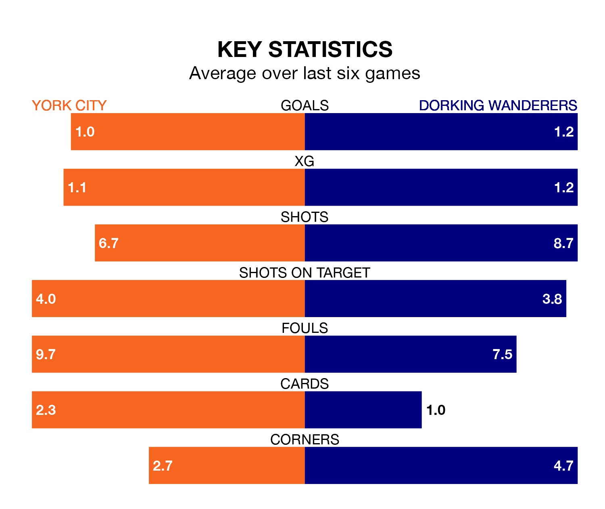

York City face Dorking Wanderers on Tuesday seeking to protect their long unbeaten run in National League.
York are unbeaten in seven, with two wins and five draws, ahead of the 7.45pm kick-off.
They face a Dorking team who have won two and drawn one over the same number of games.
Dorking are 19th in the table after 26 games, of which they have won eight and drawn four, earning 28 points.
York are one place ahead of Wanderers in 18th, with six wins and 12 draws putting them on 30 points.
With 30 goals in 26 games so far this season, the visitors are scoring at below the league average rate with 1.2 goals per game. And they are conceding more than average, letting in 45 goals at a rate of 1.7 per game.
City are also below average scorers, with 1.3 goals per game, compared to a league average of 1.5. They have conceded 1.6 goals per game.
York's last match was on January 7, a 1-1 draw against Boreham Wood, with Adam Crookes getting the goal for York.
Dorking lost 1-0 against Oldham Athletic last time out, on January 6.
Updated: 10:50, 10/01/24